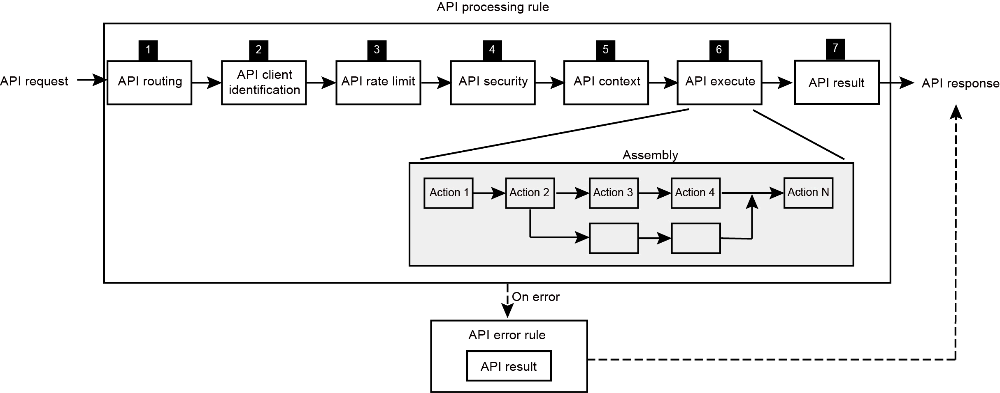

Request processing
After an API collection is matched, the API Gateway triggers the API processing rule of the collection to match the target API, enforce the constraints to execute the target API operation, prepare the context for the running of the operation, and execute the assembly rule of the API to respond to the request.
The API Gateway processes a request by interacting with the API context. For each transaction, a context is prepared before processing starts and is continuously updated during the transaction.
As shown in Figure 1, the API Gateway uses an API processing rule, which comprises
the following processing actions, to process the request. The API Gateway achieves each step of the process through
running the corresponding processing action. You can click relevant component in the diagram for
detailed instructions.
- The API Gateway runs the API routing action to match the target API to call. When no API is matched, the request is rejected.
- The API Gateway runs the API client identification action to examine the API key credentials that are carried in the API request and match the API plan through which the target API is made available to the client.
- The API Gateway runs the API rate limit action to enforce the rate limit scheme that is configured for the matching API plan. When the rate limit is reached, the request is rejected.
- The API Gateway runs the API security action to perform the security checks that are required by the target API and operation. When the security requirement is not fulfilled, the request is rejected.
- The API Gateway runs the API context action to populate the context variables for the assembly to access or manipulate.
- The API Gateway runs the API execute action to execute the assembly of the target API.
- The API Gateway runs the API result action to prepare the final response to the client based on the result from the API execute action.
Figure 1. API request processing flow
